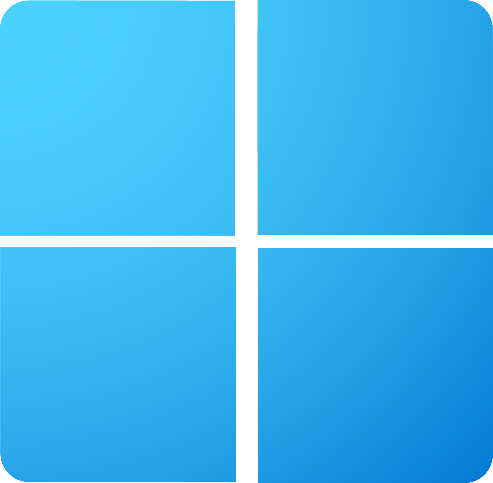

Анонс Windows 11 Insider Preview Build 22635.4371
Microsoft выпустила новую предварительную сборку Windows 11 (версия 23H2) под номером 22635.4371 (KB504498) для участников программы Windows Insider на канале Beta.

Microsoft выпустила новую предварительную сборку Windows 11 (версия 23H2) под номером 22635.4371 (KB504498) для участников программы Windows Insider на канале Beta.
